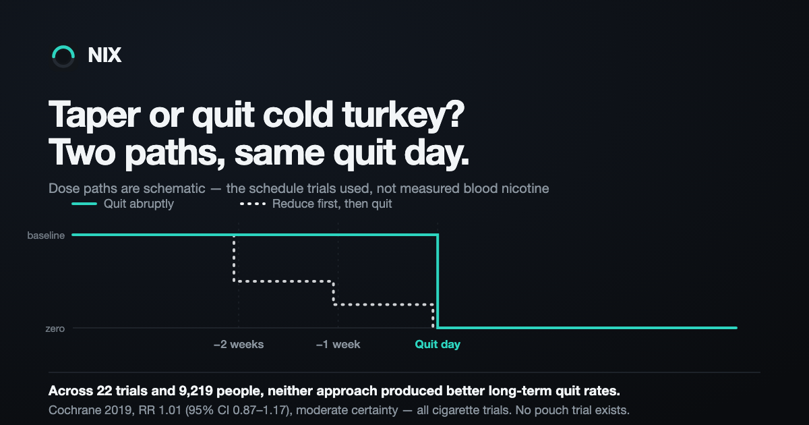

Taper or quit Zyn cold turkey?

No trial has compared tapering with quitting abruptly in nicotine-pouch users, so every confident answer you will read on this is borrowed from cigarette research. That research is large and reasonably consistent: pooled across 22 trials and 9,219 people, cutting down before a quit day and quitting outright produced the same long-term quit rates.¹ Which means the decision is yours to make on other grounds — and this is about what those grounds actually are.
What the cigarette trials found
The 2019 Cochrane review of reduction-to-quit interventions is the closest thing to a settled answer anyone has. Comparing reducing before a quit day against quitting abruptly, it found neither approach produced better long-term quit rates — risk ratio 1.01, 95% CI 0.87 to 1.17, across 22 studies and 9,219 participants, rated moderate certainty.¹ A risk ratio of 1.01 is as close to "no difference" as this kind of evidence gets.
The best-known single trial points slightly the other way. Lindson-Hawley and colleagues randomised 697 smokers in English primary care either to quit abruptly or to reduce their smoking by 75% over the two weeks beforehand. Both groups got behavioural support from nurses and nicotine replacement before and after quit day. At four weeks, 49.0% of the abrupt group were abstinent against 39.2% of the gradual group; at six months, 22.0% against 15.5%.² It was designed as a noninferiority trial, and gradual quitting did not clear the bar.
A separate meta-analysis, restricted to the three trials that gave both arms the same nicotine replacement, points the same way: prolonged abstinence was lower in the gradual arms, risk ratio 0.77.³
Those results are less contradictory than they look. The Cochrane figure pools a much wider set of reduction programmes, many of them not matched arm-for-arm; the head-to-head trials with identical medication in both groups lean toward quitting outright. The honest summary is that tapering has no demonstrated advantage over stopping, and may carry a small disadvantage — and that all of this was measured in people who smoked.
One more finding from that trial is easy to over-read. Participants who preferred gradual quitting were less likely to be abstinent at four weeks than those who preferred abrupt quitting, 38.3% against 52.2%.² That is a comparison between people, not between methods. It suggests something about who tends to choose a taper. It does not show that choosing one makes you worse off.
Why none of that is quite about pouches
Every participant in every trial above was a smoker, and a pouch is a different delivery device wearing the same drug. In a crossover study measuring blood nicotine after a single use, a cigarette hit peak concentration at 8.5 minutes and 11.6 ng/ml, while two commercial pouches peaked at 22 and 26 minutes and 7.9 and 5.2 ng/ml.⁴ Lower peak, slower arrival, and — because you can wear one through a meeting — far more of them in a day.
That study was run and funded by a pouch manufacturer, which is worth knowing when you read it. The direction of the finding is not controversial, though: a pouch habit is a flatter, longer curve than a smoking habit, with no smoke break to structure it and no smell to signal it.
So the transfer from smoking trials to pouches is an assumption, not a measurement. Nobody has run the study. Anyone who tells you tapering pouches beats stopping pouches, or the reverse, is extrapolating — including us.
The lever cigarettes never had
Here the difference works in your favour. When a smoker cuts down, they tend to smoke each remaining cigarette harder. Because only about 6–10% of a cigarette's nicotine is normally absorbed, puffing more frequently and more intensively can raise the delivered dose three- to fourfold, which means nicotine exposure can be largely maintained even as the daily count falls.⁵ Cutting the number is not the same as cutting the dose.
Pouches allow the same trick — hold it longer, use more, move up a strength — but they also come in labelled milligram steps, so reducing the dose is something you can actually specify rather than approximate.
With one caveat that has teeth. The number on the can is not the dose. A laboratory analysis of seven commercial pouch products found measured nicotine content drifting either side of the label: two products both labelled 7 mg contained 4.6 mg and 5.7 mg, one labelled 6 mg contained 5.4 mg, and one labelled 8 mg contained 8.2 mg.⁶ That work came from a manufacturer's laboratory too. Read across brands and a "6 mg to 3 mg" step is not reliably a halving. Read within one brand and the steps are at least consistent, which is the practical argument for tapering inside a single product line rather than shopping for a weaker one.
Content is also not the same as what reaches your blood, which depends on how much dissolves and how much of that you absorb. On that, the same analysis is discouraging about the tactic most people try first — taking the pouch out sooner. Measured in artificial saliva, 93% of all the nicotine one product released over an hour came out inside the first 20 minutes.⁶ That is a lab apparatus rather than a mouth, but it suggests cutting a 40-minute habit to 20 minutes removes far less than half of anything.
If you taper, taper the thing that is actually measurable: strength steps within one product line, and the number of pouches per day. Hold time is a much weaker lever than it feels like, and switching brands mid-taper silently changes the dose.
The reason most people want to taper is the least-measured thing in the file
Almost nobody tapers because they think it produces a better outcome. They taper because they expect it to hurt less. That is the obvious question, and it is the one the trials answered worst.
The Cochrane review reports that pre-quit adverse events and nicotine withdrawal symptoms were measured "variably and infrequently" across studies, and that there was no clear evidence of a difference between trial arms in changes to withdrawal symptoms.¹ That is not a finding that tapering fails to soften withdrawal. It is the absence of a finding either way — the trials were built to count who was still abstinent at six months, not to track how rough the fortnight before quit day felt.
Which leaves the comfort argument sitting on plausibility rather than evidence. Plausibility is not nothing. It is just less than most people assume they are getting.
A taper and "cutting down" are not the same thing
This is the distinction that decides most of it, and it is buried in the study designs rather than the headlines. In all three head-to-head trials, the reduction arm followed a fixed schedule and then stopped on a set date: 50% in week one and 75% in week two; or 25%, 50% and 75% across three weeks; or 50% across four weeks. Every one ended on a cessation date.³ The Cochrane review likewise excluded trials in which reduction was not aimed at quitting altogether.¹
So the evidence above is not about cutting down. It is about a two-to-four-week ramp with a hard stop at the end. Reducing to a lower steady state is a different activity that these trials did not test, and if that is what you are planning, you should know the research does not speak to it.
It also means a taper does not let you avoid a quit day. It puts one at the end, and asks you to make a decision about every single pouch for two to four weeks first. If the thing you are worst at is topping up without deciding to, a taper hands you the hardest version of exactly that.
If you do taper, the evidence says don't do it unaided
The one clearly actionable finding in the Cochrane review is about support, not schedule. Reduction aided by pharmacotherapy produced higher quit rates than reduction alone — risk ratio 1.68, 95% CI 1.09 to 2.58, across 11 studies and 8,636 participants — though rated low certainty, with subgroup analysis suggesting the benefit held for fast-acting nicotine replacement and varenicline and not for patches, combination replacement or bupropion.¹ A separate subgroup signal suggested reduction may beat abrupt quitting specifically when varenicline is used as the reduction aid.¹
Those are cigarette trials, and varenicline is prescription-only, so this is a conversation with a clinician rather than something to action from a blog post. The transferable point is narrower: an unassisted taper is the version of tapering with the weakest evidence behind it.
How to choose when the outcome data won't choose for you
Since the quit-rate evidence does not separate the two methods by much, pick on execution instead — which failure you are more likely to survive.
- Quitting outright front-loads everything. Withdrawal symptoms are usually worst in the first week and peak in the first three days, then ease over the first month.⁷ One bad stretch, at a time you choose. The hour-by-hour timeline is what that looks like from the inside.
- Tapering spreads it out and adds decisions. Milder days, more of them, and roughly forty opportunities a week to renegotiate with yourself. It suits people who need a run-up; it punishes people whose problem is the automatic reach.
- A previous attempt is data. If your last cold-turkey attempt ended inside 48 hours, repeating it identically is a plan with a known result. If you have never gone six waking hours without a pouch, a taper at least gets you used to gaps before the gaps become permanent.
Whichever you pick, the trial designs suggest three things worth copying: a fixed quit date no more than a week or two out⁸, a written schedule rather than an intention, and support in place before day one rather than after it goes badly. And put the first 72 hours somewhere they can be survived badly — a Thursday evening start puts the peak on a Saturday. Craving SOS is built for that window.
One thing to be straight about: none of this is a promise about your outcome. The comparison has never been run in pouch users, the cigarette evidence is closer to a tie than to a verdict, and individual variation is larger than the gap between the two methods. If withdrawal is severe or you have medical concerns, that is a conversation for a clinician, not a blog post.
NIX builds the schedule from your own logged habit. A taper in real strength steps or a dated cold-turkey plan, an hour-by-hour map of the first 72 hours, and craving support in the five minutes that actually matter.
Sources
- Lindson N, Klemperer E, Hong B, Ordóñez-Mena JM, Aveyard P. Smoking reduction interventions for smoking cessation. Cochrane Database of Systematic Reviews, 2019;9:CD013183. PMID 31565800
- Lindson-Hawley N, Banting M, West R, Michie S, Shinkins B, Aveyard P. Gradual Versus Abrupt Smoking Cessation: A Randomized, Controlled Noninferiority Trial. Annals of Internal Medicine, 2016;164(9):585–592. PMID 26975007
- Tan J, Zhao L, Chen H. A meta-analysis of the effectiveness of gradual versus abrupt smoking cessation. Tobacco Induced Diseases, 2019;17:09. PMC6752113
- Chapman F, McDermott S, Rudd K, et al. A randomised, open-label, cross-over clinical study to evaluate the pharmacokinetic, pharmacodynamic and safety and tolerability profiles of tobacco-free oral nicotine pouches relative to cigarettes. Psychopharmacology, 2022. Funded by Imperial Brands. PMC9217727
- Benowitz NL, Donny EC, Edwards KC, Hatsukami DK, Smith TT. The Role of Compensation in Nicotine Reduction. Nicotine & Tobacco Research, 2019;21(S1):S16–S18. PMC6939759
- Platt SP, Gonzales CM, Pokharel P, et al. Dissolution and physical characterization of oral nicotine pouch products. Scientific Reports, 2026;16:4406. Authors employed by Altria Client Services. PMC12864968
- National Cancer Institute. Handling Nicotine Withdrawal and Triggers When You Decide To Quit Tobacco. cancer.gov
- National Cancer Institute / Smokefree.gov. Prepare to Quit. smokefree.gov